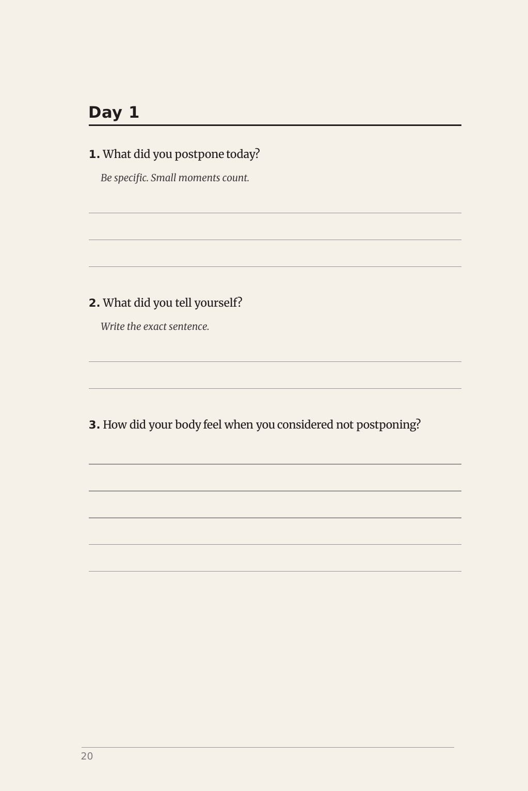
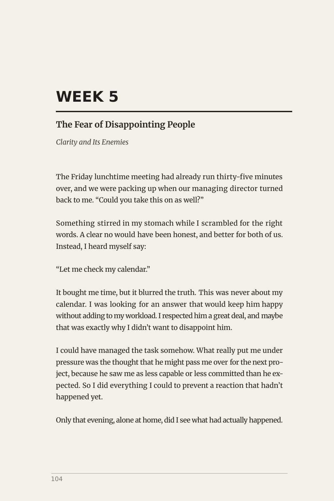
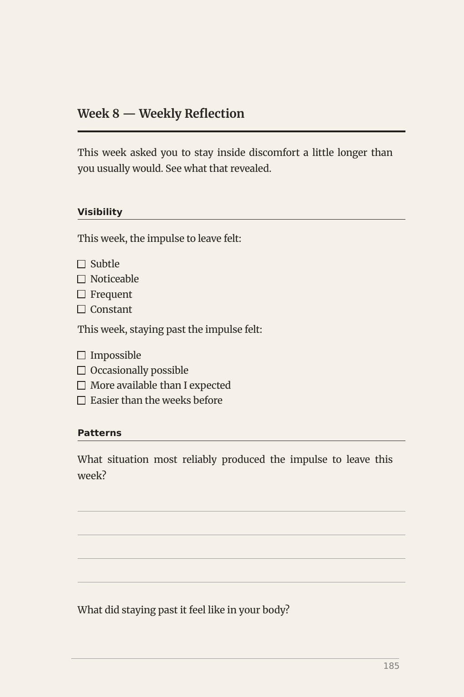
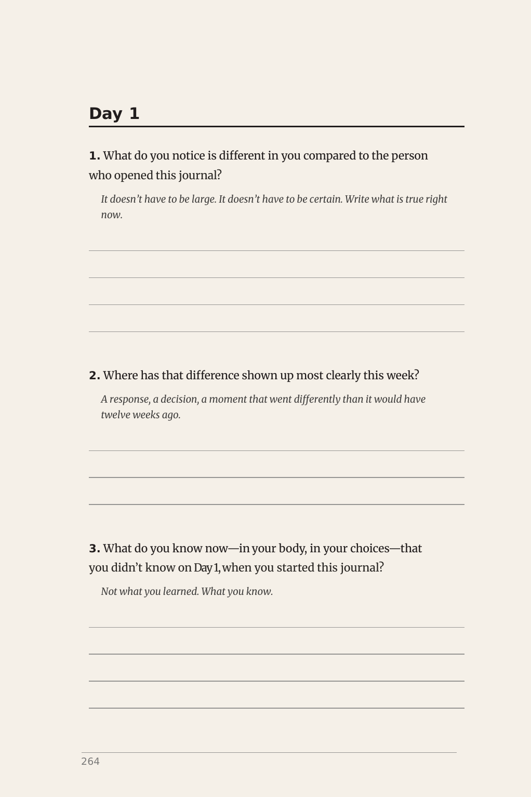
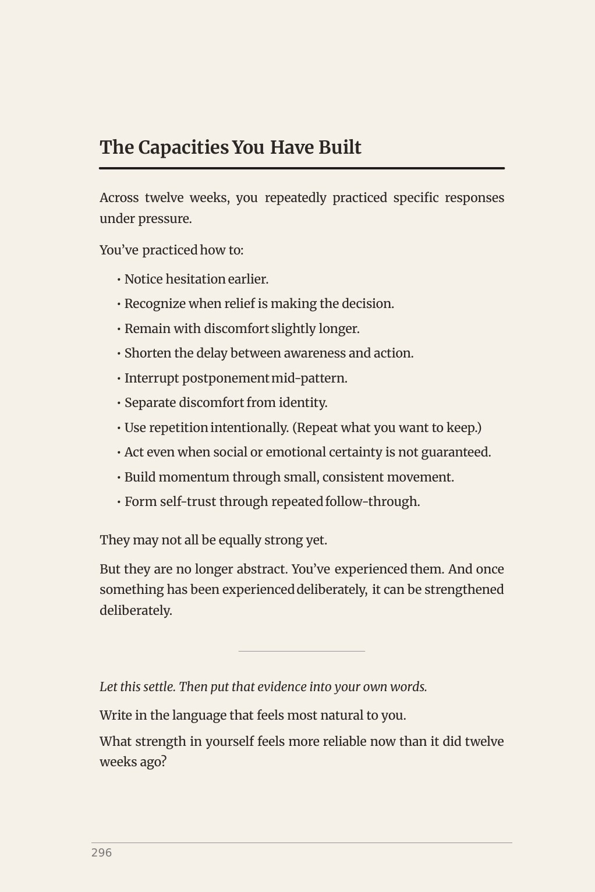

You Choose
What Stays
This is the journal for people who are done with journals that ask them to list three things they're grateful for.
Over twelve weeks, it takes you through the patterns that hold you back, one at a time, and shows you at the end what has changed.
It doesn’t ask for long sessions or perfect days. You can pick it up at six in the morning, at midnight, or in the ten minutes before the day asks everything of you again.
The Methodology
From inside the journal

Phase 1 — Seeing your patterns
The journal moves through four phases of work, followed by your 12-Week Review. In Weeks 1–3, you learn to catch a pattern while it’s happening, instead of noticing it hours later. It might be the call you put off again, or the tightness in your chest before you speak up in a meeting. Each time you catch it, you see how every repetition has made the pattern easier to fall into. And what you can see, you can begin to change.
Every week follows the same rhythm, with five days of guided questions, two days of open writing, and a reflection at the end. On the days your motivation fails you, the structure was designed to hold you.

Phase 2 — Understanding what drives them
Weeks 4–7 go one layer deeper, to what keeps the pattern alive. You start to hear your inner voice talking you out of what you already know. You notice how the fear of disappointing someone can ruin your whole day before anyone has even said a word. You recognize the excuses you’ve been making that keep you stuck. You stagnate when you could flourish. And you see how “just this once” silently turns into every time. When you understand a pattern this well, it stops controlling your actions and gives you back your agency.

Phase 3 — Practicing new capacities
Weeks 8–11 are where the earlier work starts to pay off. With everything you’ve built so far, you stop analyzing and start practicing. You stay in the hard conversation a little longer, even when everything in you wants to leave, and you learn that a racing heart is a normal physical response that doesn’t always mean you’re in physical danger. Every promise you keep to yourself builds more self-trust. And you begin to distinguish between the procrastination that gives your ideas room to grow and the kind that waits until a crisis makes the choice for you. Then, without waiting to feel ready, you start setting your life in motion.

Phase 4 — From knowing into becoming
By Week 12, you have spent eleven weeks strengthening your behavioral muscles, and built capacities you can actually use. You have widened your window of tolerance, so more of what used to overwhelm you now feels manageable, and trained your attention to reach deeper, so you can name what you feel with real precision. You can stop a pattern halfway through instead of letting it run its course. You can say what you mean, and be fine with not knowing how it will land. And you have learned to repeat the new habits you want to keep. None of this is theory anymore. You have lived it. Week 12 is where you let other people see it, and find out how much of what you’ve practiced has truly become yours.

Your 12-Week Review — What twelve weeks reveal
Each week, you circle a number for three dimensions. Visibility shows how clearly you saw your pattern. Action shows what you did once you saw it. Tolerance shows how long you could stay with the discomfort. Your 12-Week Review adds them up into a profile of how you respond under pressure. Your lowest dimension reveals which of three core patterns has been running you, and your highest shows where the work has already taken hold. And you leave with a clear focus for the next thirty days and beyond.
The methods behind these pages usually come with an hourly rate, in a coach’s or a therapist’s office. Here, they come with a pen.